This week
detect_spyder.py: locates all 48 SpyderCheckr48 patches straight from the photo — no hand-clicked corners, no --bbox/--corners needed
ctt-server: a Flask web UI that runs on the Pi and wraps the whole Raspberry Pi camera-tuning loop — tag & capture, a live coverage checklist, run the tuner, inspect ΔE and lens-shading residuals — instead of a pile of SSH commands and hand-renamed files
charuco_calibrate.py: auto-detects the ArUco dictionary, filters degenerate near-collinear views before they crash calibrateCamera, and writes detection overlays so detection stays verifiable after the run
rpi.ccm, shading → rpi.alsc, WB → rpi.awb in the libcamera tuning file — and lens distortion nowhere in libcamera (no ISP dewarp stage), so it stays an undistort in our pipeline
Details
The two vinyl prints ordered back in week 12 arrived — the ChArUco pattern at A4 and at A1. Vinyl is the fix for the warped-board setback from week 10: unlike paper on cardboard it holds flat on its own, with no rigid backing fighting the humidity. The A4 went on the plain white drawer front (the same flat surface from week 12's white-balance attempt) for the close-range intrinsic captures — it turns up again further down — and the A1 on a large plywood panel for the ground-plane work, where the board has to read clearly from across the room.
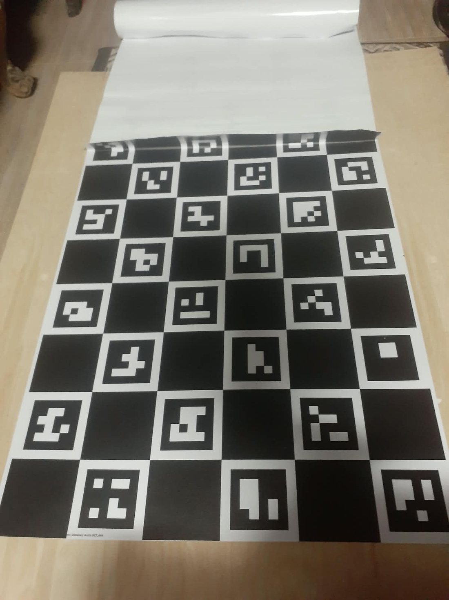
detect_spyder.py answers one question — where is each of the 48 patches, in pixel
coordinates — straight from the photo, with no hand-clicked corners and no
--bbox/--corners arguments. It runs in four steps.
A Canny edge pass (auto-thresholded off the image's own median brightness, so it isn't tuned to one
lighting setup) over the whole photo, then every contour gets filtered down hard before it's trusted
as a real patch: must simplify to exactly 4 convex corners, sides within
0.014×width–0.075×width long, roughly equal on all four sides (shortest ≥
62% of the longest — rules out anything sheared or foreshortened past what a patch actually looks
like), and filled (contour area ≥ 60% of side²). Then one more check on what's actually inside the
box: sampled at its centre, it has to be either flat and low-texture (a gray patch) or strongly
saturated (a colour patch) — never both textured and weak-colour at once. That last rule is
what throws out the wood-grain panelling and the hand holding the card, both of which pass every
geometric check but fail this one.
The surviving squares get linked into groups by a union-find over pairwise distance, with the link
radius set to 1.9× the median patch size — comfortably more than one patch's own pitch
(so neighbouring patches within a panel do link up), but well under the gap across the hinge (so the
two panels never merge into one blob). Left cluster becomes columns A-D, right becomes E-H, sorted by
centroid x — that separation keeps column D from being pulled in as if it were column E.
Each cluster gets rotated flat by its own squares' median tilt angle, deduplicated (a patch is often
found twice — inner and outer contour — so points closer than half a patch-width get merged), and the
true patch pitch is read off as the median nearest-neighbour distance. Dividing every point's position
by that pitch and rounding gives each square an integer (col, row) — then one homography
is least-squares fit (RANSAC-scored) from those integer indices straight to pixel coordinates. Finally,
orientation gets pinned by something the geometry alone can't tell you: row 1 has to be
brighter than row 6, because that's genuinely true of this card (white/light tints on top,
blacks on the bottom) — if a panel comes back the wrong way round, its grid gets turned 180°.
Because the whole panel is fit as one 4×6 lattice at once, a patch's centre is just
homography × (col, row) directly — rows 2 through 6 are read off the same fitted
transform as row 1, not stepped down from it. Each panel is fit from its own squares, so the left
panel never borrows the right panel's geometry — each one answers for its own patches.
Grey: every square candidate found. Orange/cyan: the two panels' chosen clusters. Yellow: each panel's fitted patch area. Green: row 1. Red: every other centre. Same detector, same settings, run against one real capture at each of the four colour temperatures actually shot this project — 3200K/4200K/5200K/6500K — with nothing hand-tuned between them:
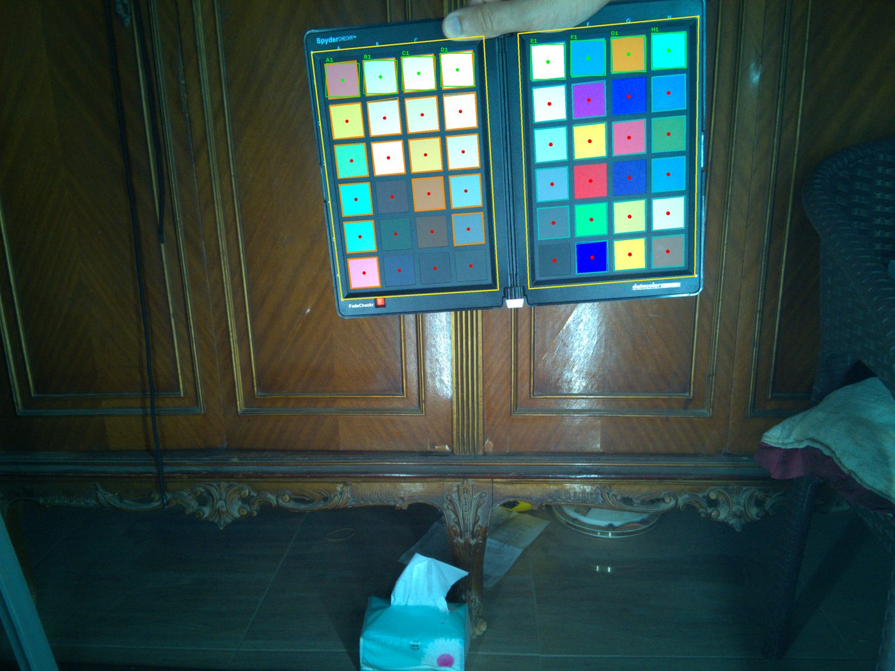
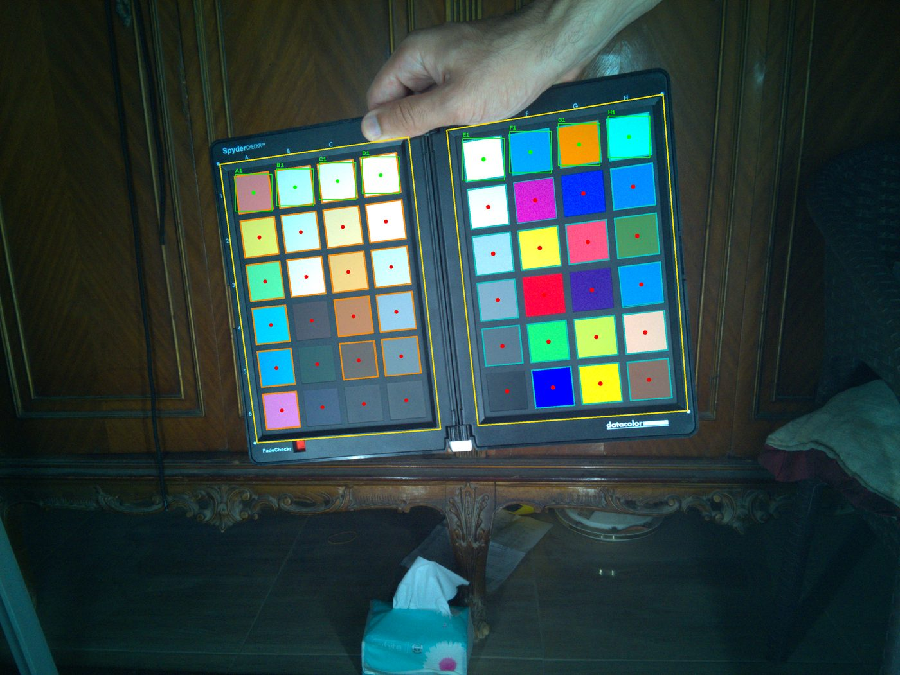
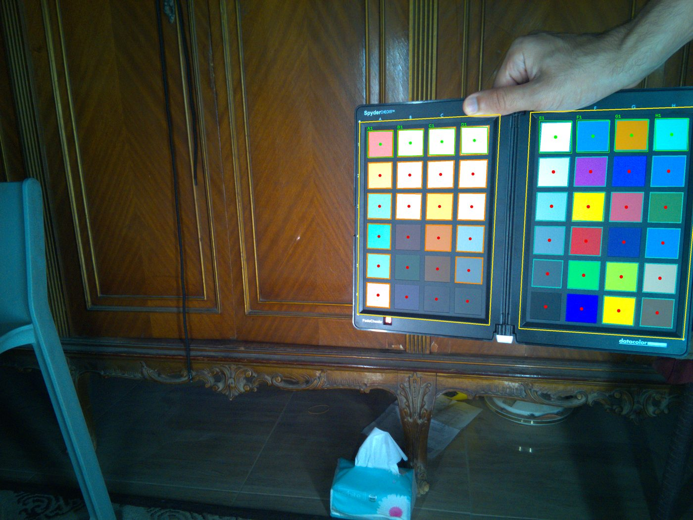
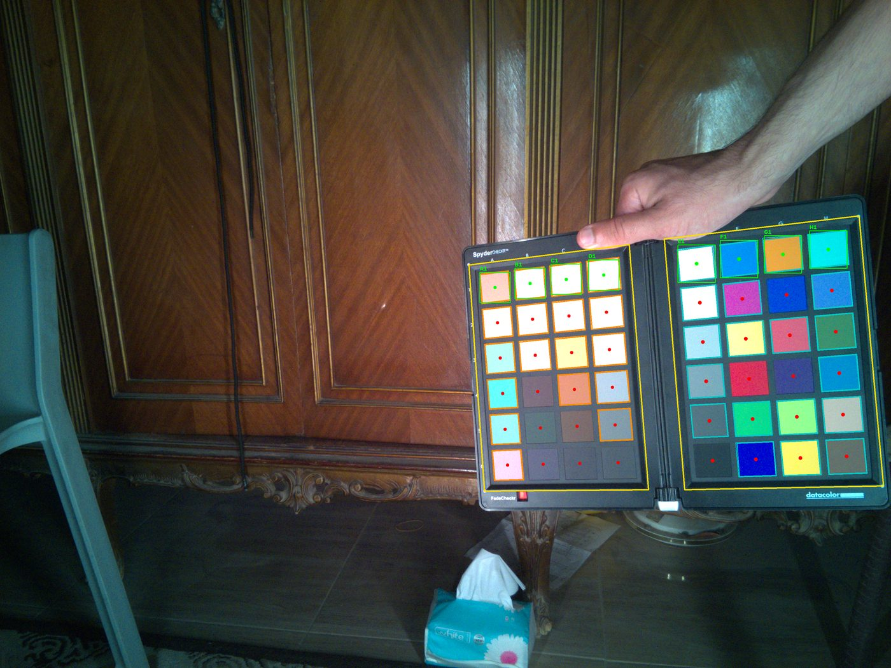
All four came back clean: the right panel scored 20 of 24 squares as homography inliers every time, the left 18–19 of 24, and no panel was flagged as flipped. Two guard checks keep a bad fit from passing quietly — each panel's fitted quad has to have a plausible aspect ratio (~1.5, patch-grid-shaped, not a stray rectangle), and the two panels have to sit at roughly the same scale and height, so a shelf edge or shadow boundary gets rejected rather than mistaken for a panel. If only one panel is detected, the other is derived from it across the hinge as a fallback.
Worth being precise about this before going further, because there are two different things "make it
neutral" could mean, and the pipeline does the stricter one. A real camera's onboard auto-white-balance
only ever aims at the first: it has no ground truth, so it just assumes something in the scene
is neutral and forces that to read R=G=B — internally consistent, but blind to whether the
result is actually correct. solve_wb_gain aims at the second: it fits each channel's gain
so the camera's own reading of the chart's D/E gray-ramp patches lands as close as possible — real
least-squares, not just a ratio — to that exact patch's actual, industry-measured reference
value, not merely "equal to its other two channels":
m, r = cam_lin[idx], ref_lin[idx] # m = camera's own reading, r = the chart's real measured value
gain = (m * r).sum(axis=0) / (m * m).sum(axis=0) # per channel, least-squares
gc is the gain for channel c (R, G or B), computed independently per
channel; i ranges over the 3-6 neutral patches actually used. That's the closed-form solution
to the least-squares scalar fit — the single gain that minimises squared error against the reference —
reached by setting the derivative of the error to zero and solving, not an approximation.
idx is WB_NEUTRAL_LABELS = ['3D','4D','5D','3E','4E','5E'] — the D/E gray
ramp's middle three rows specifically, not all six: rows 1-2 are excluded because they're
almost always clipped (the chart's own brightest neutrals, see below), row 6 is excluded for the
opposite reason — too little signal, noise-dominated. Whichever of those six are still sensor-clipped
in a given capture get dropped from the fit too, live, on top of that fixed list.
That distinction is why the reference chart is needed at all rather than trusting the camera's own
guess: the reference has real, calibrated numbers behind it. It also means the target isn't a
mathematically perfect gray — the chart's own patches aren't exactly equal-channel either (patch
4D's true value is [139,136,135], not [137,137,137]) — so the
fit reproduces that tiny real bias rather than flattening it away.
Real numbers, one full capture (6500K), gain [R=0.6067, G=0.312, B=0.4118]:
| patch | raw (R, G, B) | after WB gain | spread | clipped? |
|---|---|---|---|---|
| 1D | 0.861, 1.000, 1.000 | 0.522, 0.312, 0.412 | 0.210 | yes |
| 2D | 0.922, 1.000, 1.000 | 0.560, 0.312, 0.412 | 0.248 | yes |
| 3D | 0.675, 1.000, 0.918 | 0.410, 0.312, 0.378 | 0.098 | yes |
| 4D | 0.447, 0.814, 0.593 | 0.271, 0.254, 0.244 | 0.027 | no |
| 5D | 0.265, 0.470, 0.337 | 0.160, 0.146, 0.139 | 0.022 | no |
| 6D | 0.138, 0.242, 0.176 | 0.084, 0.075, 0.072 | 0.011 | no |
| 1E | 0.934, 1.000, 1.000 | 0.567, 0.312, 0.412 | 0.255 | yes |
| 2E | 0.726, 1.000, 1.000 | 0.440, 0.312, 0.412 | 0.128 | yes |
| 3E | 0.513, 0.974, 0.716 | 0.311, 0.304, 0.295 | 0.016 | no |
| 4E | 0.331, 0.614, 0.453 | 0.201, 0.192, 0.187 | 0.014 | no |
| 5E | 0.190, 0.345, 0.254 | 0.115, 0.108, 0.105 | 0.011 | no |
| 6E | 0.106, 0.192, 0.144 | 0.065, 0.060, 0.059 | 0.005 | no |
"Spread" is max(R,G,B) − min(R,G,B) after white balance — zero would be
perfectly neutral. Every unclipped patch (4D-6D, 3E-6E) lands within 0.03 of neutral. Every clipped one
is off by 0.1-0.25 — visibly, not marginally.
Look at what's actually stored for 1D: R=0.861, G=1.000, B=1.000. That's the
sensor's photosite filling up — green and blue hit the ceiling and the file simply cannot record
whether the true value was 1.01 or 1.8, it just reports "at least this much." Red never reached the
ceiling on this patch, so it's still a real, honest reading. Multiply all three by the gain and the
damage is visible directly: 0.522, 0.312, 0.412 — R is nearly double G. Red-heavy,
green-deficient reads exactly as the pink/magenta cast you can see on the chart.
3D is the borderline case worth knowing about, because it shows this isn't a fixed "always
exactly 4 patches" rule — it's whatever the actual light levels happened to be in that specific shot.
Here 3D clips too (green pinned at 1.000) while 3E, one row over, doesn't —
same nominal brightness level, different actual result, because the two panels don't reflect back
identical amounts of light. The clip boundary moves capture to capture; the fix (excluding clipped
patches from the fit, or forcing them neutral with dehue_highlights) has to work
per-capture, not off a fixed patch list.
Different algorithm from white balance, not the same one applied twice. WB is 3 independent scalars, one per channel — it can't mix channels. The CCM is a full, unconstrained 3×3 matrix, solved by ordinary least squares, with no bias/offset term — forced through the origin on purpose:
A, B = cam_lin[selected], ref_lin[selected] # only the patches chosen below, un-clipped
if w is not None: # optional per-patch weight
s = sqrt(w)[:, None]
A, B = A * s, B * s
X, *_ = np.linalg.lstsq(A, B, rcond=None) # solves argmin ||A @ X − B||²
# apply as: corrected = [R,G,B] @ X
mi/ri are one patch's measured/reference colour as a 1×3 row,
X is the 3×3 matrix being solved for, W is the diagonal matrix of per-patch weights
(wi=0 for anything not selected). Same shape of problem as WB — least squares
against the reference — just fitting a full matrix instead of 3 independent scalars, which is what
lets it mix channels and correct actual colour, not just brightness per channel. In practice
np.linalg.lstsq solves it via SVD rather than literally inverting ATWA
(more numerically stable when patches are close to collinear — see the neutral-only matrix attempt
earlier, which hit exactly that failure mode), but the two are mathematically the same answer.
No bias term is a deliberate choice, not a missing feature: a free offset would let the fit shave a little error off the patches by shifting the whole image's black point, but that same offset then adds to every pixel in the corrected photo — lifting shadows off true black and blowing out more highlights. In linear light there's a stronger reason too: zero photons in has to mean zero photons out, so the fit should pass through the origin exactly, not approximately.
Which patches get a say in that fit — and how much of one — is FIT_WEIGHTS:
FIT_WEIGHTS = {
# D, E columns -- the full 6-row gray ramp, weight 1.0 each
'1D':1.0, '2D':1.0, '3D':1.0, '4D':1.0, '5D':1.0, '6D':1.0,
'1E':1.0, '2E':1.0, '3E':1.0, '4E':1.0, '5E':1.0, '6E':1.0,
# F column -- the chart's secondary colours (cyan, magenta, yellow), moderate weight
'1F':1.5, '2F':1.5, '3F':1.5,
# F column -- the pure red/green/blue primaries, heaviest weight
'4F':3.0, '5F':3.0, '6F':3.0,
}
Only columns D, E and F — 18 patches at most, usually fewer once whatever's sensor-clipped in that
specific capture gets dropped (typically 6-9 survive). D+E anchor the achromatic axis (the same gray
ramp WB uses, but here all 6 rows rather than just the middle 3 — WB needs a narrower, safer slice to
average; the CCM fit just drops whichever ones happen to be clipped instead). F carries the fully
saturated colours, R/G/B weighted twice as heavily as C/M/Y specifically to prioritise the primaries.
Every other column — A, B, C, G, H, roughly 30 patches — is not in the fit at all; the
original reasoning (documented in the code) was that they sit inside the span of what D/E/F already
constrain, so they'd fall into place without needing to be fit directly. The A6/C1/C2
investigation above is a real instance of that assumption not always holding.
All 14 real lighting conditions behind every number on this page — 4 colour temperatures (3200/4200/5200/6500K), 2500-20000 lux each — each one run through all four phases: the raw capture with nothing done to it yet, after white balance alone, after the full pipeline (CCM + highlight de-hue), and the real on-camera JPEG for comparison. One row per phase, scroll right within a row to see every condition. One of the 15 raw sessions was the same 5200K/12000lux condition shot twice, so it collapses to one column here; one (3200K/2500lux) only has a camera1 capture, so that's the one shown for it. All 14 detected both chart panels automatically, no manual corners needed for any of them.
Every capture in this whole set comes from one script running on the Pi 5 itself, firing both IMX219s at once:
W=1640 # match your calibration resolution
H=1232
SETTLE=2000 # ms for AE/AWB to settle before the still
DUR=30000 # ms of video
SESSION="captures/$(date +%Y%m%d_%H%M%S)"
mkdir -p "$SESSION"
# 1) stills first — this is what align_overlap.py reads
sleep 5
rpicam-still -n --camera 0 \
--width 3280 --height 2464 --quality 100 \
-r -o $SESSION/camera0.jpg &&
rpicam-still -n --camera 1 \
--width 3280 --height 2464 --quality 100 \
-r -o $SESSION/camera1.jpg
The one flag that matters most for everything on this page is -r — that's what makes
rpicam-still save a .dng alongside the .jpg for every shot,
which is the only reason a "raw, ISP-bypassed" phase is possible to show at all. Full sensor
resolution (3280×2464, not the 1640×1232 the variables at the top suggest —
those set up a different, faster preview mode this script doesn't actually call), max JPEG quality so
the on-camera comparison image isn't its own extra source of loss, both cameras fired back to back in
one run, and every session written to its own timestamp-named folder so re-running never clobbers a
previous one. The script itself only stamps the timestamp (captures/YYYYMMDD_HHMMSS/) —
the _<ct>k_<lux>l suffix used throughout the rest of this project gets
appended afterward, from the room's actual measured colour temperature and lux at the time of that
session.
Every capture is a .dng, read with the camera's onboard ISP completely bypassed —
rawpy's own auto white balance and auto brightness are both explicitly switched off
(use_camera_wb=False, use_auto_wb=False, no_auto_bright=True), and it's decoded in the
sensor's own native colour space (output_color=rawpy.ColorSpace.raw), not converted
through any camera colour matrix. So "raw" here really does mean the sensor's linear response with
nothing done to it — the only two things that happen at all are demosaicing (turning the Bayer mosaic
into RGB pixels in the first place, unavoidable to display it as a photo) and, purely so it's viewable
on a screen, the sRGB gamma curve applied for display. No white balance, no exposure compensation, no
colour correction, no tone curve. That's what the strong green cast in every image in this row is —
the sensor's actual, uncorrected colour response to this light, before anything downstream touches it.
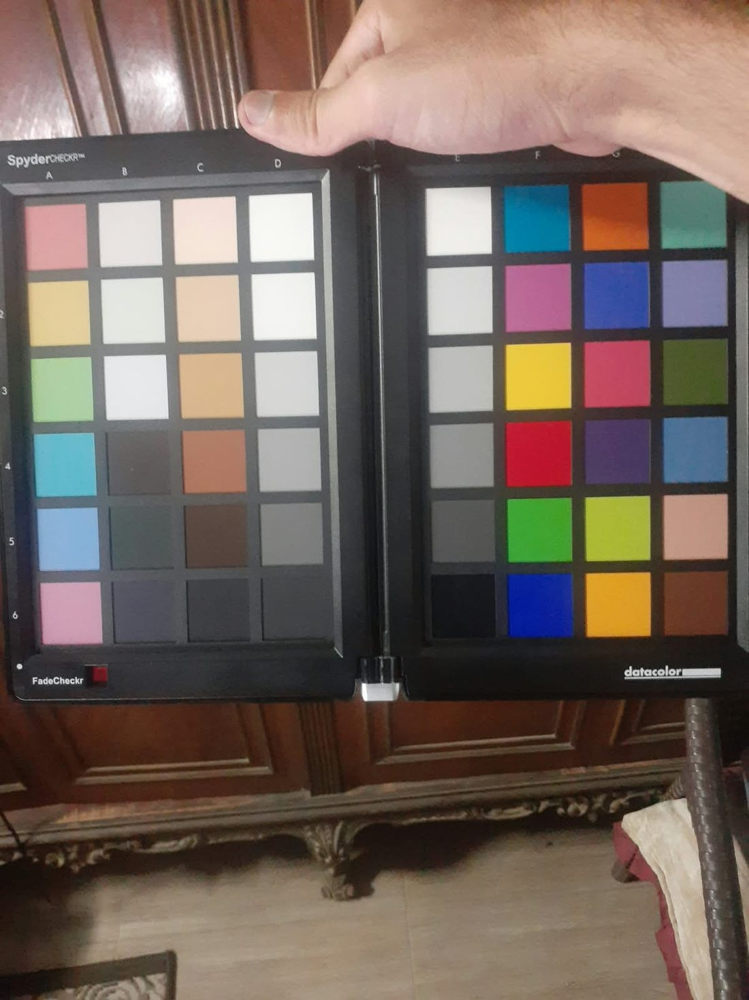
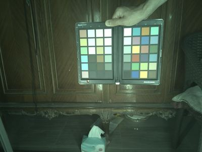
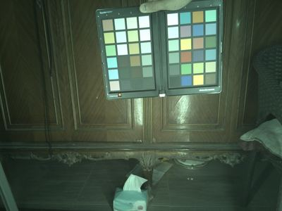
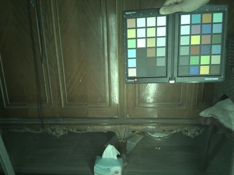
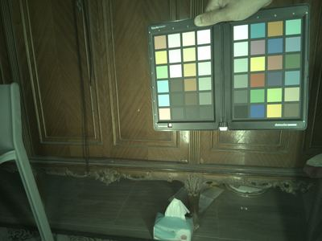
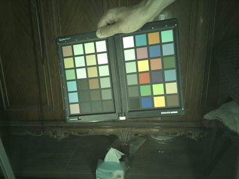
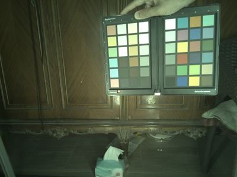
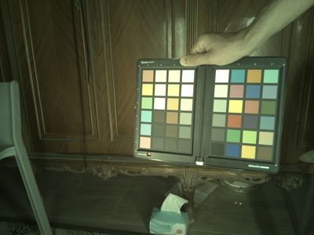
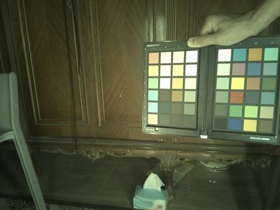
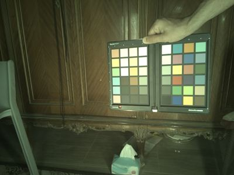
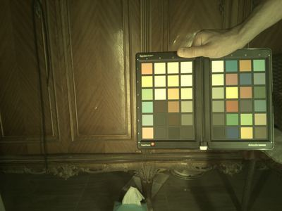
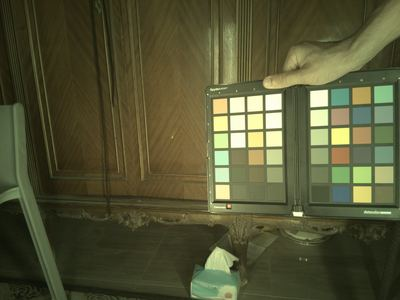
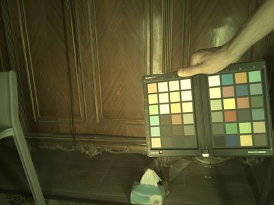
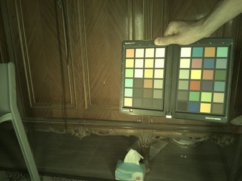
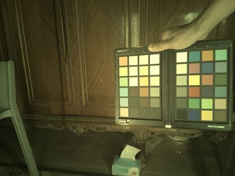
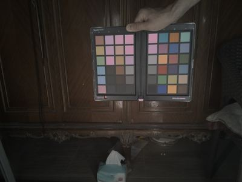
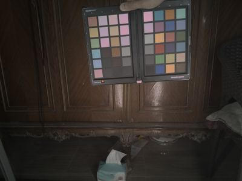
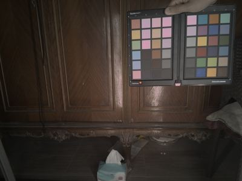
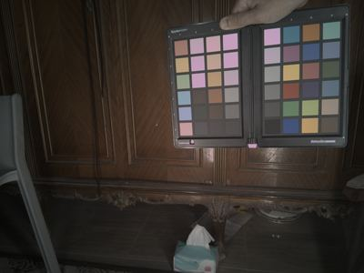
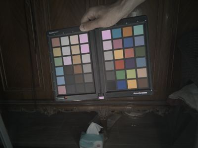
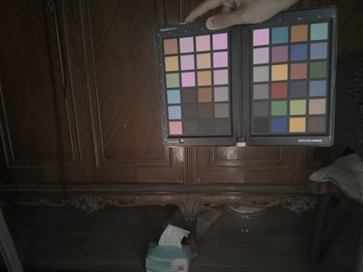
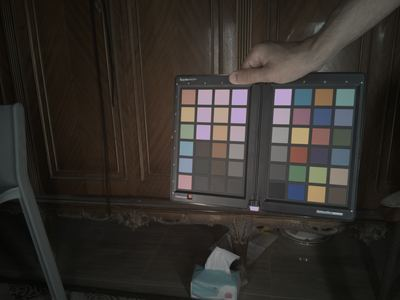
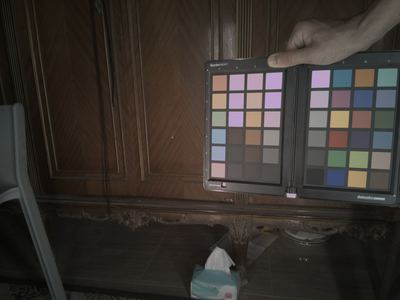
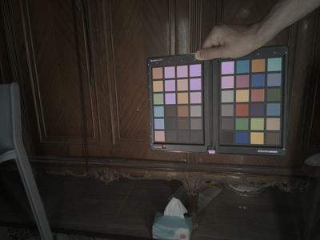
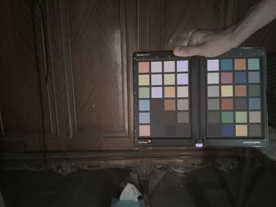
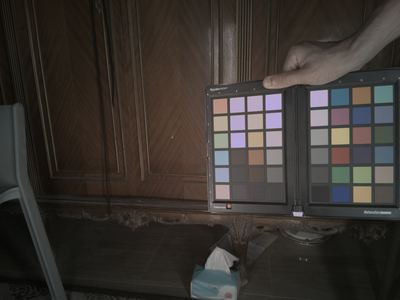
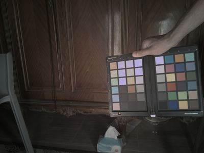
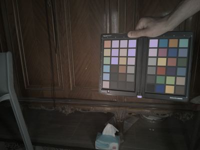
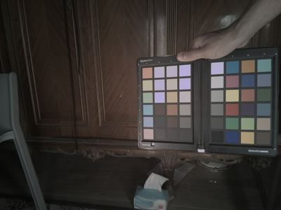
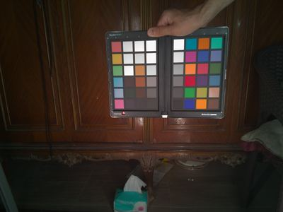
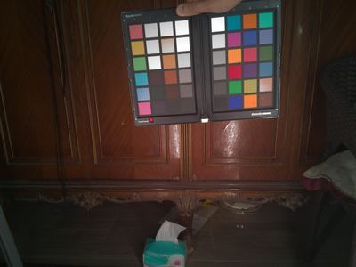
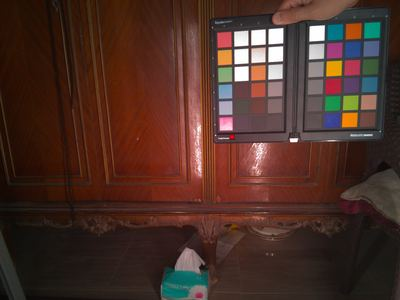
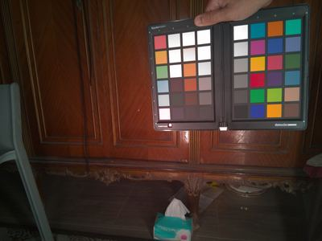
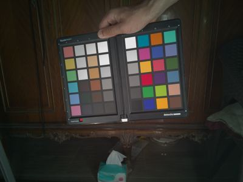
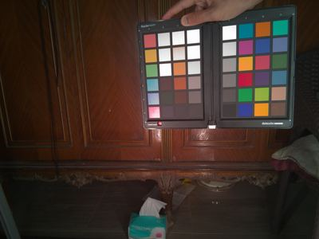
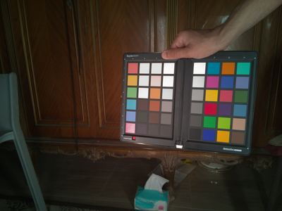
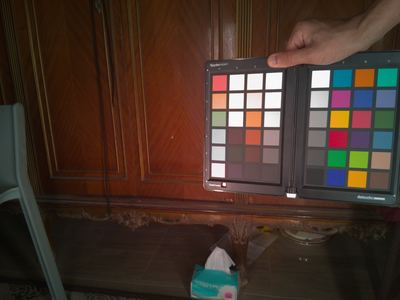
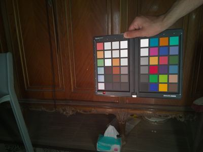
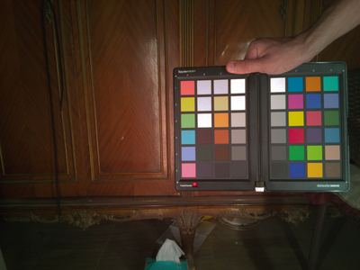
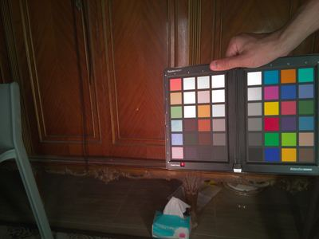
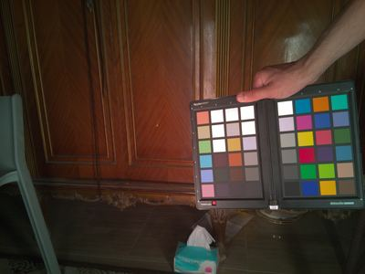
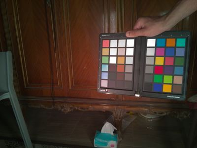
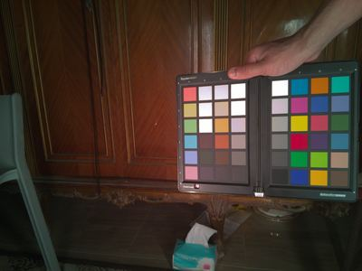
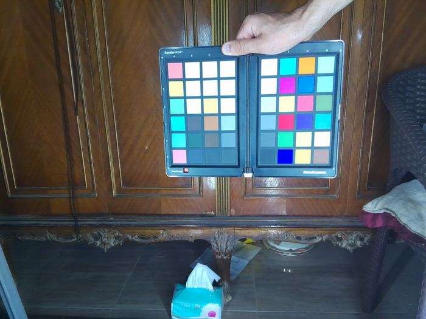
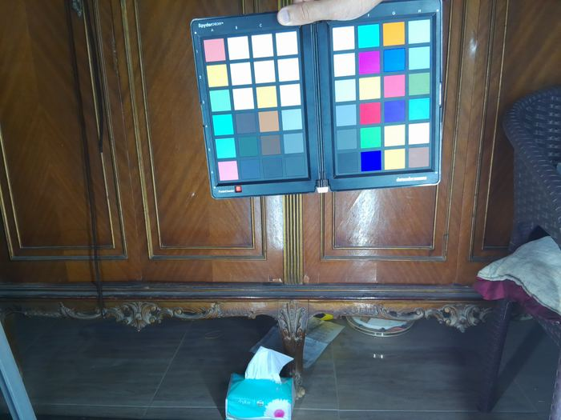
Separately from the D/E highlight problem, three other patches — A6 ("low-sat magenta"),
C1 ("lightest skin"), C2 ("lighter skin") — kept coming out visibly wrong
too. Chasing this one took several wrong guesses before finding the real cause, worth walking through
honestly rather than just stating the answer, because the wrong guesses are exactly where the mistakes
were.
Structurally true, and easy to confirm: the CCM is only ever fit against columns D, E and F —
A and C are never included, clipped or not. So the obvious first thing to
try was adding them in. A 4-capture test looked like a clear win. Testing it properly across all 14
captures told a different story — overall accuracy actually got *worse* in 8 of the 14 (the
regressions clustered in 4200K/3200K specifically), and A6's own error, while it improved
on paper in all 14, turned out not to mean much:
That's a real error-number improvement next to two crops that are visually indistinguishable. The lesson: a smaller Euclidean colour-error number doesn't guarantee a visible fix, and it's worth looking at the actual pixels before believing a metric — the 14-capture regression on overall accuracy plus this non-improvement is why this fix didn't ship.
Printing the actual CCM matrix showed a steep R-row ([2.804, -0.592, -0.034]) — a strong
R boost, calibrated to pull the dim red primary patch up to full saturation. Reasonable guess: that
boost, applied to A6's own already-elevated R, is what's overshooting. Tried reducing how
hard the fit weights the R/G/B primaries, 6x down from the default. It barely moved the number
(R=250 down to R=240, out of a true value of 190) — the wrong
lever, disproven by the same rule as above: check the actual result, don't stop at a plausible-sounding
theory.
A6's raw sensor R reads 0.950. The highest raw R among every single patch
actually used in the CCM fit, for that same capture, is 0.545. The matrix was never
calibrated anywhere near A6's actual brightness — its behaviour out there is pure
extrapolation, the exact same mechanism as the D/E highlight problem, just showing up on a moderately
saturated colour instead of a neutral, and under a threshold (0.985) that never flagged it
as clipped.
Not a property of magenta pigments in general — F2, the chart's actual primary magenta,
reads a perfectly ordinary raw R=0.376. Every other reddish patch on the whole card, at a
similar true reference R, reads somewhere in 0.4-0.5. A6 alone jumps to
0.95 — isolated to this one patch, not a class of colours. Looking at the actual pixels
answers it directly: rendered plainly, A6 doesn't look magenta at all, it looks like a
washed-out warm beige —
and the raw pixels inside the sample window confirm real, partial clipping that the mean-based check missed entirely:
R: min=0.89, mean=0.95, max=1.00 -- some individual pixels ARE fully clipped
G: min=0.82, mean=0.89, max=0.94
B: min=0.53, mean=0.62, max=0.67
is_clipped() checks the sample window's mean against 0.985 — a
window can be genuinely, individually blown out in places and still average out to something that
passes. Real gap, independent of anything else found here, worth closing regardless of what's actually
causing the overexposure.
The overexposure pattern itself points at a specular reflection — a direct glint of the light source off the card's glossy surface at this one spot — rather than the scene just being generally bright. Checked it against brightness across 8 real captures to be sure rather than assume:
5200K/4500l (dim): 84% of the sample window's pixels clipped
5200K/12000l (brighter): 0% clipped -- higher lux, LESS clipping
5200K/20000l (brightest): 3% clipped
3200K/2500l (dimmest shot in the whole set): 84% clipped
3200K/10800l: 95% clipped
6500K (all 3 sessions, any lux): 0% clipped, every timeZero correlation with lux — the dimmest capture in the entire dataset is 84% blown, while a *brighter* capture at the same colour temperature is completely clean. What does track is the light source's own physical position: every 6500K session is spotless, while most 3200K and some 5200K sessions are badly hit — consistent with a glint whose presence depends on the geometry between light, glossy card, and camera, not on how much light is in the room. Different CTs likely meant physically repositioned lights, and some of those positions happen to send a direct reflection straight into this one patch.
Conclusion: like the D/E ceiling, this is a physical capture-time problem, not a code bug — a
different mechanism (a glint's geometry rather than plain sensor saturation) but the same category of
fix, meaning no amount of further fit-tuning was ever going to solve it. The one genuinely actionable
finding to come out of chasing it is the mean-vs-per-pixel gap in is_clipped(), which is
worth fixing on its own regardless of this specific patch.
Everything above is my own Python, run off-Pi against the SpyderCheckr shots. That covers
colour correction, but a camera's lens shading — corners darker and colour-shifted
relative to the centre — is a separate job, and the tool that does it properly is Raspberry
Pi's own Camera Tuning Tool, which reads raw DNGs and writes the sensor's .json
tuning file directly. Driving that by hand means SSHing into the Pi, naming every capture with
its colour temperature and lux by hand, shuffling folders around, and reading a log file. So
the first half of this fortnight went on ctt-server: a small Flask app that runs
on the Pi and puts a UI on that whole loop.
ctt-server starting on the Pi — HTTPS on :5000, self-signed certimx219.json)
A project is one capture session for one sensor. Inside it, tabs follow the same sequence the
tuning guide does — Capture, Images, Run CTT, Results, Tuning, MTF, Sharpen, Preview,
Characterise. The Capture tab removes the most friction: pick an image type
(Macbeth / ALSC / CAC / Dark), enter the
measured colour temperature and lux, and it writes the file already named the way the tuner
expects (imx219_6500k_1000l.dng) — no more hand-renaming. The coverage checklist
underneath tracks what the tuner still needs: ALSC flat-fields at ≥2 colour temperatures, ≥3
Macbeth shots, Macbeth across ≥3 illuminants.
It degrades gracefully when there's no camera on the machine — "capture is disabled, run CTT on existing images" — so it can be pointed at a folder of DNGs from a laptop and the run / results / preview half still works. That is exactly how the lens-shading pass below was done.
The capture targets for lens shading are flat fields — an evenly-lit, featureless surface, shot as raw DNG, one set per illuminant. Six per camera, at 5000 K:
ALSC has a colour component as well as a luminance one, so some flats were shot under strongly coloured light too — these feed the Cr/Cb (colour-shading) tables:
Feeding _alsc_flat_camera0/ to the tuner (PiSP target) with no Macbeth, dark or
CAC images in the folder puts it in ALSC-only mode: it disables CCM, AWB,
AGC, gamma/contrast, DPC, denoise, sharpen, CAC and lux, and fits only the shading tables.
Images found:
Macbeth : 0 ALSC : 6 CAC : 0 Dark : 0
Disabled: rpi.ccm / rpi.awb / rpi.agc / rpi.contrast / rpi.lux / rpi.dpc / ...
Channel dimensions: w = 1640 h = 1232 # 32x32 stats grid
ALSC colour tables — Colour temperature: 5000 K
Red table corners (1.319, 1.311, 1.307, 1.329) centre 1.003
Blue table corners (1.015, 1.037, 1.041, 1.026) centre 1.051
Luminance corners (4.586, 3.179, 3.408, 5.744) centre 1.024Read the luminance row directly: the centre of the frame is fine (gain ≈ 1.0), but one corner comes back 5.7× darker than the centre and needs that much gain to match — and the four corners are nowhere near equal (3.2 / 3.4 / 4.6 / 5.7), so the falloff is lopsided, not a clean radial vignette. The red table says the edges also read about 1.3× red-deficient against the centre; blue is almost flat. Rendering the 32×32 luminance table as a heatmap shows the shape — lowest gain (already-bright) sitting right of centre, worst gain in the bottom-left corner:
Every flat field in the set has that same brighter patch toward the right, and the tuner put
its lowest-gain cells there too — so the pipeline is treating it as real module shading (an
off-centre optical axis or sensor tilt) and pulling the rest of the frame up to meet it,
rather than papering over a one-off glint. Both IMX219s were run separately; they shade close
but not identically, so each gets its own imx219_cameraN_pisp.json — the
per-camera-parameters argument from week 8, again.
The tuner reports how non-uniform each flat field still is after its own correction:
| flat | camera 0 — corners / worst | camera 1 — corners / worst |
|---|---|---|
| 1 | 19.5% / 28.7% | 19.4% / 29.9% |
| 2 | 17.7% / 23.9% | 15.5% / 21.8% |
| 3 | 11.6% / 14.0% | 11.2% / 13.6% |
| 4 | 13.8% / 21.9% | 12.7% / 20.2% |
| 5 | 12.2% / 17.0% | 11.7% / 17.4% |
| 6 | 10.1% / 17.0% | 10.4% / 18.1% |
That residual isn't all error left on the table. luminance_strength is 0.8, not
1.0 — the correction deliberately stops short of fully flattening the corners, because pushing
a corner up by the full 5.7× multiplies its read noise by 5.7× as well. The tool's own Results
view draws this as a falloff heatmap with the matching corner / worst / strength numbers:
That empty "Colour accuracy" panel is the honest summary of what's still missing: this pass
fixed lens shading only. The colour-correction matrix and the AWB colour-temperature curve
still need SpyderCheckr captures under three-plus real illuminants, fed through the same tool
— the capture side of ctt-server exists so that's the next run, not another
hand-driven one.
Separate from the colour work — this is the geometric side: focal length, principal point, and lens distortion, the numbers the BEV homography has been waiting on since week 9. The warped-board problem from week 10 is why it took until now; the fix was a stiffer board and a lot more shots.
A calib.io ChArUco target, printed and mounted flat:
| parameter | value |
|---|---|
| layout | 7 × 5 squares (245 × 175 mm) |
| square / marker | 35 mm / 26 mm |
| ArUco dictionary | DICT_4X4_50 (auto-detected) |
| ChArUco corners | 6 × 4 = 24 (ids 0–23) |
ChArUco over a plain checkerboard for the same reason as week 9: the ArUco marker inside each white square gives every inner corner a globally-unique id, so a frame that only shows part of the board — some of these do, clipped at a frame edge — still contributes, and a partial or occluded board can't be mislabelled.
~150 frames per camera at the pipeline's working resolution (1640 × 1232), the board swept across distance, tilt and image position so the solver sees the corners under enough distinct perspectives to separate focal length from distance and distortion from principal-point offset. Every frame each camera saw:
The room was dim and the board hand-held, deliberately — the detector still locks all 24 corners on frames darker and more skewed than anything the running system will meet, which is the cheapest confidence check there is that the board and dictionary are right. Camera 1 was shot the same way:
charuco_calibrate.py — one file, OpenCV, a glob in and a
calibration.yaml out:
# board (calib.io): 7x5 squares, 35 mm square, 26 mm marker, in metres
board = cv2.aruco.CharucoBoard((7, 5), 0.035, 0.026, dictionary)
detector = cv2.aruco.CharucoDetector(board)
for f in files:
ch_corners, ch_ids, _, _ = detector.detectBoard(gray)
if ch_corners is None or len(ch_corners) < 6: # need a stable view
continue
obj, img = board.matchImagePoints(ch_corners, ch_ids)
xy = obj.reshape(-1, 3)[:, :2]
if len(obj) < 8 or (xy.max(0) - xy.min(0) < 1e-6).any():
continue # drop degenerate / collinear views
obj_pts.append(obj); img_pts.append(img)
rms, K, dist, rvecs, tvecs = cv2.calibrateCamera(obj_pts, img_pts, img_size, None, None)
Three things it does that a first pass usually skips. The ArUco dictionary is
auto-detected — it runs each DICT_4X4_* against the first frame
and keeps whichever finds the most markers, so a wrong dictionary can't fail silently. Every
kept view needs ≥ 6 corners. And the degenerate-view filter above drops the near-collinear
frames that otherwise make calibrateCamera abort with a cryptic
matH0 size assertion rather than a useful message. It also writes five detection
overlays per run — the detect_check/ images above — so "did detection actually
work" is answerable without re-running anything.
| camera 0 | camera 1 | |
|---|---|---|
| fx | 1296.23 | 1301.24 |
| fy | 1296.60 | 1301.28 |
| cx | 828.56 | 840.21 |
| cy | 656.36 | 639.79 |
| k1, k2, k3 | 0.186, −0.459, 0.288 | 0.209, −0.557, 0.442 |
| p1, p2 | 0.00022, −0.00012 | 0.00014, 0.00109 |
| RMS reprojection | 0.212 px | 0.225 px |
Both land at about a fifth of a pixel — well inside the script's own 0.5 px "GOOD" line, and
good enough that reprojection error won't be the limiting term in the BEV stitch. The two
cameras come out close but genuinely not identical: fx differs by ~5 px, the
principal point by ~12 px in x and ~17 px in y, and camera 1's distortion is clearly stronger
(k2 −0.557 vs −0.459). That gap is the whole reason each camera carries its own intrinsics
through the pipeline instead of a shared average — the weeks 8–9 argument, now with the
numbers behind it. Both calibration.yaml files (K, distortion, RMS, image size,
dictionary) are the drop-in inputs the homography stage reads.
This fortnight produced three calibration outputs: white balance + a colour-correction matrix
(my Python pipeline on the SpyderCheckr shots), lens-shading tables (ctt, ALSC),
and the intrinsics + distortion coefficients (OpenCV, ChArUco). Two of the three are libcamera
tuning-file blocks the Pi ISP applies at capture time; the third isn't a libcamera thing at
all.
| calibration output | libcamera block | applied |
|---|---|---|
| colour-correction matrix | rpi.ccm | ISP, at capture |
| white balance vs colour temp | rpi.awb (ct_curve) | ISP, at capture |
| lens shading (ALSC) | rpi.alsc | ISP, at capture |
| lens distortion (k1…k3, p1, p2) | — none — | our pipeline, after capture |
The Pi's per-sensor tuning file lives at
/usr/share/libcamera/ipa/rpi/pisp/imx219.json (Pi 5 / PiSP; the VC4 path is
…/rpi/vc4/imx219.json). It's {"version": 2.0, "target": "pisp",
"algorithms": [ … ]}, where algorithms is an ordered list of
single-key objects — rpi.black_level, rpi.awb, rpi.alsc,
rpi.ccm, rpi.contrast, and so on. You calibrate one block, then
splice it into a full copy of the stock file in place, keeping array order. Don't ship
ctt's ALSC-only output directly — it holds only rpi.alsc, so the ISP
would run with no black level, AWB, CCM or gamma.
Then select the merged file per camera:
# rpicam-apps: one flag; the capture script already runs cam 0 / cam 1 as separate processes
rpicam-still --camera 0 --tuning-file /home/pi/tuning/imx219_camera0.json -r -o cam0.jpg
rpicam-still --camera 1 --tuning-file /home/pi/tuning/imx219_camera1.json -r -o cam1.jpg
# libcamera directly -- env var, so one per process:
LIBCAMERA_RPI_TUNING_FILE=/home/pi/tuning/imx219_camera0.json ./bev_app --camera 0
# picamera2:
Picamera2(camera_num=0, tuning=Picamera2.load_tuning_file("imx219_camera0.json"))
Per-camera files matter here for the same reason the intrinsics did: the two modules shade and
colour-shift differently enough to want their own rpi.alsc (and, once shot,
rpi.ccm) tables.
rpi.alsc
Already in the right shape — ctt wrote it. Copy the whole rpi.alsc
object out of imx219_camera0_pisp.json and over the stock file's:
{
"rpi.alsc": {
"omega": 1.3, "n_iter": 100, "luminance_strength": 0.8,
"calibrations_Cr": [ { "ct": 5000, "table": [ /* 32x32 red-gain grid */ ] } ],
"calibrations_Cb": [ { "ct": 5000, "table": [ /* 32x32 blue-gain grid */ ] } ],
"luminance_lut": [ /* 32x32, colour-temperature-independent */ ],
"sigma": 0.005, "sigma_Cb": 0.005
}
}
One illuminant (5000 K) → a single entry in each calibrations_* list, so the ISP
does no colour-shading CT interpolation — it applies that one grid at every colour temperature.
Shooting flats at a second CT later just adds a second {ct, table} pair and the
ISP interpolates. luminance_lut is CT-independent by design, so one is always
enough.
rpi.ccmA list of matrices keyed by colour temperature; the ISP picks by estimated scene CT and interpolates between the two nearest:
{
"rpi.ccm": {
"ccms": [
{ "ct": 3200, "ccm": [ m00, m01, m02, m10, m11, m12, m20, m21, m22 ] },
{ "ct": 5200, "ccm": [ … ] },
{ "ct": 6500, "ccm": [ … ] }
]
}
}Three things to get right moving my Python matrix into that array:
corrected = [R,G,B] @ X (row
vector × matrix); libcamera computes out = M · in (matrix × column vector), so
M = XT — flatten XT row-major for the nine
numbers.rpi.awb's job, not
the matrix's. My unconstrained least-squares fit doesn't guarantee that; renormalise each
row (or refit with the constraint) first.{ct, ccm} entry is
applied flat everywhere. The 14-condition set on this page already spans 3200–6500 K, so
there's a matrix per CT to drop in — what the CCM section higher up was building toward.
Order of operations inside the ISP: black level → lens shading (rpi.alsc) → AWB
gains (rpi.awb) → rpi.ccm in linear light → gamma
(rpi.contrast). So the matrix is applied to white-balanced linear RGB — exactly
what my Python fits against before solving for X.
Neither the VC4 nor the PiSP ISP has a geometric barrel/pincushion dewarp stage — no tuning
block, no runtime control that takes OpenCV's k1…k3, p1, p2. So
calibration.yaml is consumed by our pipeline, not the camera:
newK, _ = cv2.getOptimalNewCameraMatrix(K, dist, (1640, 1232), alpha=0)
map1, map2 = cv2.initUndistortRectifyMap(K, dist, None, newK, (1640, 1232), cv2.CV_16SC2)
# per frame: undist = cv2.remap(frame, map1, map2, cv2.INTER_LINEAR)
Better still, since the BEV stage already resamples every frame through the ground-plane
homography: compose the undistort map with that homography so undistortion and the perspective
warp are one GPU resample, not two. The closest libcamera gets to lens geometry is
rpi.cac (PiSP only) — a per-channel LUT for lateral chromatic aberration
(edge colour fringing), which needs its own CAC capture set (the CAC image type in
ctt-server). Different defect from barrel distortion; it stays in the ISP, the
distortion stays in the app.